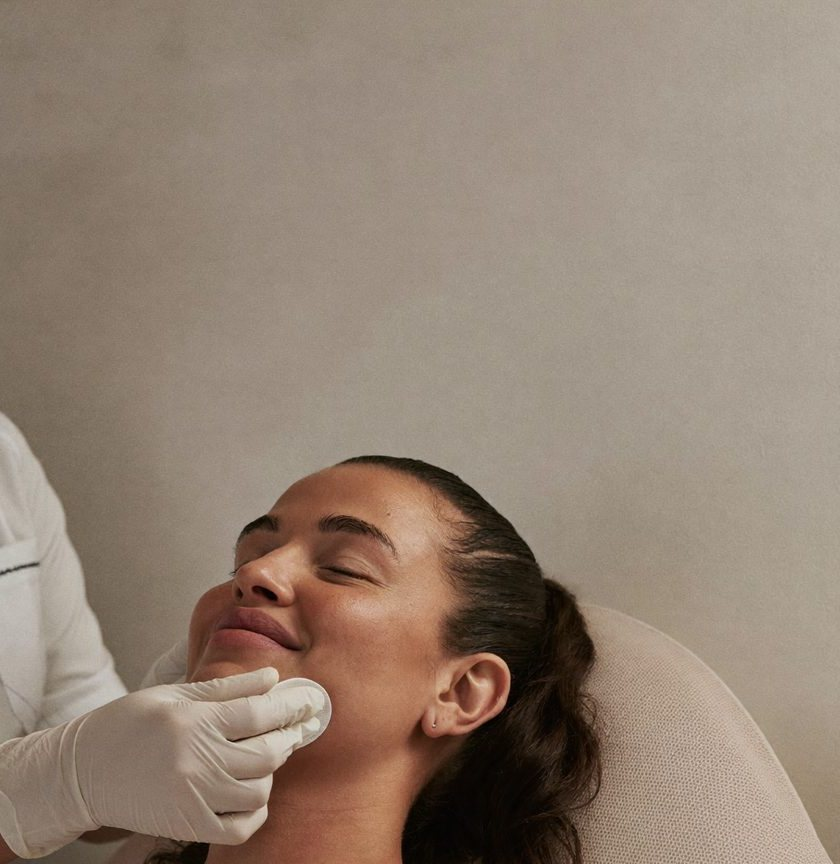

Qué es
Sustancias como la hidroxiapatita de calcio o el ácido poliláctico estimulan a tu propia piel a fabricar colágeno nuevo. El cambio es progresivo: más firmeza, mejor calidad de piel y un rostro que se sostiene mejor.
Duración
40–60 minutos
Sesiones
1 a 3 sesiones, separadas 4–8 semanas
Recuperación
Enrojecimiento o sensibilidad por 1–3 días
Los tiempos son orientativos. En tu valoración te decimos qué aplica a tu caso.
Para quién
¿Es para ti?
Evaluamos antes de recomendar.
Preguntas frecuentes
Lo que suelen preguntarnos.
¿Cuándo veo resultados?+
El colágeno tarda en formarse: los cambios se empiezan a notar hacia la semana 6–8 y siguen mejorando por meses.
¿Es lo mismo que un relleno?+
No. El relleno aporta volumen inmediato; el bioestimulador mejora la calidad y firmeza de la piel desde adentro.
¿Cuánto dura?+
Entre 12 y 24 meses, según el producto, tu piel y tus hábitos.


Valoración médica
Conversemos sobre lo que quieres cuidar.
Primero te escuchamos. Luego recomendamos.